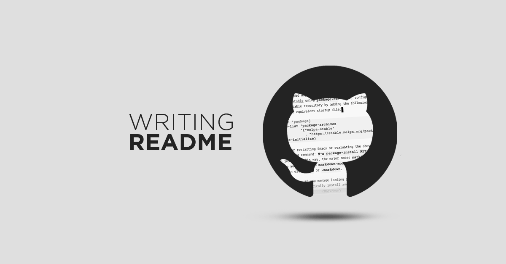

The Role and Importance of a README File
A README file introduces a project and explains how to use it. It usually includes details like the project's purpose, setup steps, usage instructions, and contact information. It helps others quickly understand and work with your project.
Read more